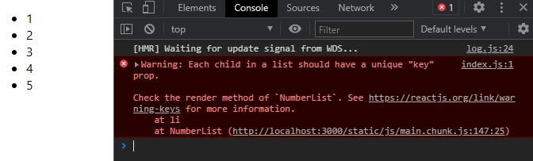
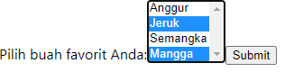

Terakhir diperbarui: 2021-03-02
Codelab ini adalah lanjutan materi dari codelab sebelumnya tentang Konsep ReactJS Bagian 1. Pada codelab ini Anda akan melanjutkan untuk mempelajari cara menangani event, kondisional rendering, penggunaan list dan key, serta penggunaan forms.
Materi praktikum ini dibagi menjadi dua pertemuan, yang sebelumnya berjudul Konsep ReactJS Bagian 1. Untuk codelab ini meliputi materi tentang JSX, rendering element, component, props, state dan lifecycle.
Sebelum memulai codelab ini, sebaiknya Anda memiliki pengetahuan dasar tentang:
Menangani events dengan elements React hampir mirip caranya dengan menangani events pada elements DOM. Ada beberapa perbedaan sintaks, yaitu:
Contoh dalam kode HTML:
<button onclick="aktivasiAkun()">
Aktivasi Akun
</button>Jika ditulis dalam sintaks React seperti berikut:
<button onclick={aktivasiAkun}>
Aktivasi Akun
</button>React tidak dapat menggunakan return false untuk mencegah dari default behavior pada suatu elemen HTML. Dalam React, Anda harus memanggil fungsi preventDefault secara eksplisit. Contohnya pada kode HTML, jika Anda ingin membuat link agar tidak membuka halaman baru, Anda dapat menulisnya seperti berikut ini:
<a href="#" onclick="console.log('Link sudah diklik.'); return false">
Klik Saya
</a>Jika ditulis dalam kode React, maka Anda harus menulisnya seperti ini:
function ActionLink() {
function handleClick(e) {
e.preventDefault();
console.log('Link sudah diklik.');
}
return (
<a href="#" onClick={handleClick}>
Klik Saya
</a>
);
}Dari kode tersebut, variabel e adalah synthetic event. React mendefinisikan synthetic events sesuai spesifikasi dari W3C. Sehingga Anda tidak perlu khawatir terkait dengan kompabilitas antar browser. React events tidak sama cara kerjanya dengan native events. Silakan baca referensi SyntheticEvent untuk mempelajarinya lebih lanjut.
Dalam kode React secara umum Anda tidak perlu memanggil fungsi addEventListener untuk menambahkan listeners pada sebuah elemen DOM setelah dibuat. Anda cukup menyediakan listener ketika elemen tersebut telah diinisialisasi untuk di-render.
Ketika Anda mendefinisikan sebuah component menggunakan ES6 class, sebuah pola umum akan terbentuk untuk menangani event menjadi sebuah method dalam class itu. Sebagai contoh, Anda akan membuat komponen toggle button yang dapat diklik oleh user menjadi "ON" dan "OFF" dengan tiga cara berbeda. Silakan lakukan langkah-langkah praktikum berikut ini.
src/index.js. Copy kode berikut dan paste di src/index.js lalu sesuaikan NIM dan Nama Anda.// Cara 1: membuat toggle button
class Toggle extends React.Component {
constructor(props) {
super(props);
this.state = { isToggleOn: true };
// binding ini dibutuhkan agar dapat bekerja ketika pemanggilan
this.handleClick = this.handleClick.bind(this);
}
handleClick () {
this.setState(state => ({
isToggleOn: !state.isToggleOn
}));
}
render () {
return (
<button onClick={this.handleClick}>
{this.state.isToggleOn ? 'ON - NIM Anda' : 'OFF - Nama Anda'}
</button>
);
}
}
ReactDOM.render(
<Toggle />,
document.getElementById('root')
);src/index.js tersebut, lalu npm start untuk melihat hasilnya di browser. Maka akan tampil tombol yang bisa diklik dengan berubah teks button-nya.Dari kode di atas, Anda harus berhati-hati ketika menggunakan this dalam pemanggilan JSX. Dalam JavaScript, method dalam class tidak bound (terikat) secara default. Sehingga jika Anda lupa menggunakan this.handleClick, maka akan ada error undefined.
Selanjutnya lakukan langkah-langkah berikut untuk cara kedua:
src/index.js, silakan hapus pada baris kode ini: this.handleClick = this.handleClick.bind(this);handleClick dengan kode berikut: handleClick = () => {
this.setState(state => ({
isToggleOn: !state.isToggleOn
}));
}Dari kode cara kedua tersebut, secara default telah aktif dengan Create React App. Anda bisa melakukan cara ketiga, yaitu menggunakan arrow function saat pemanggilan. Silakan lakukan langkah-langkah berikut untuk cara ketiga:
src/index.js dari cara kedua, silakan ganti penulisan method handleClick() dan render() dengan kode berikut: handleClick () {
this.setState(state => ({
isToggleOn: !state.isToggleOn
}));
}
render () {
return (
<button onClick={() => this.handleClick()}>
{this.state.isToggleOn ? 'ON - NIM Anda' : 'OFF - Nama Anda'}
</button>
);
}Untuk mempelajari lebih lanjut terkait penanganan event, silakan dapat dibaca di sini.
Di React, Anda dapat membuat components terpisah yang dienkapsulasi sesuai kebutuhan. Kemudian Anda dapat me-render hanya satu atau beberapa components yang diperlukan, tergantung isi nilai state dalam aplikasi.
Rendering secara kondisional dalam React sama saja dengan kondisional di dalam JavaScript. Gunakan operator if atau conditional operator untuk membuat elements yang dapat merepresentasikan state saat ini, sehingga React akan secara otomatis memperbarui UI sesuai component dan element yang digunakan.
src/index.js pada project React Anda di VS code.src/index.js kode dua components berikut:function SambutanUser (props) {
return <h1>Selamat Datang NIM - Nama!</h1>;
}
function SambutanTamu (props) {
return <h1>Mohon melakukan sign up terlebih dahulu.</h1>;
}SambutanUser dan SambutanTamu, akan ditampilkan ketika user telah login atau belum. Silakan tambahkan kode berikut:function Sambutan (props) {
const isLoggedIn = props.isLoggedIn;
if (isLoggedIn) {
return <SambutanUser />;
}
return <SambutanTamu />;
}
ReactDOM.render(
// Silakan coba ganti nilai isLoggedIn={false}
<Sambutan isLoggedIn={true} />,
document.getElementById('root')
);npm start untuk melihat hasilnya di browser. Jika nilai prop isLoggedIn sama dengan false, maka komponen yang akan ditampilkan adalah SambutanTamu. Sebaliknya jika nilai prop isLoggedIn sama dengan true, maka komponen yang akan ditampilkan adalah SambutanUser. Buat dua screenshot untuk dua tampilan tersebut sebagai laporan praktikum.Anda dapat menggunakan variabel untuk menyimpan elements. Hal ini dapat membantu Anda ketika melakukan render secara kondisional pada bagian component yang diperlukan. Silakan lakukan langkah-langkah praktikum berikut ini:
src/index.js.function LoginButton(props) {
return (
<button onClick={props.onClick}>
Login
</button>
);
}
function LogoutButton(props) {
return (
<button onClick={props.onClick}>
Logout
</button>
);
}LoginControl, yang akan menentukan me-render LoginButton atau LogoutButton sesuai nilai state saat itu. Komponen yang sebelumnya telah dibuat yaitu Sambutan juga akan ditampilkan. Tambahkan kode berikut pada file src/index.js :class LoginControl extends React.Component {
constructor(props) {
super(props);
this.state = { isLoggedIn: false };
}
handleLoginClick = () => {
this.setState({ isLoggedIn: true });
}
handleLogoutClick = () => {
this.setState({ isLoggedIn: false });
}
render () {
const isLoggedIn = this.state.isLoggedIn;
let button;
if (isLoggedIn) {
button = <LogoutButton onClick={this.handleLogoutClick} />;
} else {
button = <LoginButton onClick={this.handleLoginClick} />;
}
return (
<div>
<Sambutan isLoggedIn={isLoggedIn} />
{button}
</div>
);
}
}
ReactDOM.render(
<LoginControl />,
document.getElementById('root')
);Untuk mempelajari lebih lanjut tentang rendering kondisional dapat mengakses logical if secara inline dengan operator && dan inline if-else.
Di React, mengubah array menjadi list elemen hampir sama caranya, yaitu menggunakan fungsi map() seperti di JavaScript. Untuk lebih memahaminya, silakan lakukan langkah-langkah praktikum berikut ini.
Biasanya Anda melakukan render list di dalam sebuah component. Berikut langkah-langkah praktikumnya:
src/index.js pada project React Anda.function NumberList(props) {
const nim = props.nim;
const listItems = nim.map((number) =>
<li>{number}</li>
);
return (
<ul>{listItems}</ul>
);
}
const nim = [1, 7, 2, 2, 2, 3]; // <-- Ubah sesuai NIM Anda
ReactDOM.render(
<NumberList nim={nim} />,
document.getElementById('root')
);
const listItems seperti pada kode berikut:const listItems = nim.map((number) =>
<li key={number.toString()}>
{number}
</li>
);Keys membantu React untuk mengidentifikasi item mana yang berubah, bertambah, atau telah dihapus. Keys harus diletakkan di elemen dalam array. Jika kasusnya ID tidak unique atau tidak stabil seperti langkah 5 dari praktikum 4, maka dapat menggunakan index dari data array tersebut seperti pada kode berikut:
const listItems = nim.map((number, index) =>
<li key={index.toString()}>
{number}
</li>
);Keys digunakan bersama dengan data array yang harus unique. Tidak harus unique secara global atau di seluruh halaman. Kita dapat menggunakan key yang sama pada dua data array yang berbeda. Untuk memahaminya, silakan lakukan praktikum berikut ini.
src/index.js pada project React Anda.function Blog (props) {
const sidebar = (
<ul>
{props.posts.map((post) =>
<li key={post.id}>
{post.title}
</li>
)}
</ul>
);
const content = props.posts.map((post) =>
<div key={post.id}>
<h3>{post.title}</h3>
<p>{post.content}</p>
</div>
);
return (
<div>
{sidebar}
<hr />
{content}
</div>
);
}
const posts = [
{ id: 1, title: 'Biodata Saya', content: 'NIM: 123456 - Nama: Habibie' },
{ id: 2, title: 'Alamat Rumah', content: 'Alamat rumah saya di Jl xxx Kota Malang' }
];
ReactDOM.render(
<Blog posts={posts} />,
document.getElementById('root')
);npm start.Untuk mempelajari lebih lanjut terkait Lists dan Keys dapat mengaksesnya di sini.
Elemen form HTML bekerja sedikit berbeda di dalam React, karena elemen form secara natural tetap menyimpan beberapa state internal. Sebagai contoh, berikut kode HTML biasa yang menerima inputan nama:
<form>
<label>
Nama:
<input type="text" name="nama" />
</label>
<input type="submit" value="Submit" />
</form>Kode tersebut juga bekerja di React. Namun karena menggunakan JavaScript, maka harus ada fungsi yang menangani submit form tersebut. Untuk melakukan itu, teknik ini disebut "controlled components".
Dalam form HTML elemen seperti input, textarea, dan select biasanya diatur oleh state-nya sendiri, sehingga dapat update sesuai yang user inputkan. Di React, mutable state biasanya tetap tersimpan di properti state dari komponen itu, dan hanya bisa di-update dengan fungsi setState().
src/index.js pada project React Anda di VS Code.class NameForm extends React.Component {
constructor(props) {
super(props);
this.state = { value: '' };
}
handleChange = (event) => {
this.setState({ value: event.target.value });
}
handleSubmit = (event) => {
alert('Halo, ' + this.state.value + ' !');
event.preventDefault();
}
render () {
return (
<form onSubmit={this.handleSubmit}>
<label>
Nama:
<input type="text" value={this.state.value} onChange={this.handleChange} />
</label>
<input type="submit" value="Submit" />
</form>
);
}
}
ReactDOM.render(
<NameForm />,
document.getElementById('root')
);handleChange dan handleSubmit.src/index.js pada project React Anda. Selanjutnya kita coba dengan menampilkan form textarea. Ubah nilai value pada state di constructor seperti kode berikut:this.state = { value: 'Tulis biodata lengkap Anda di sini' };render() dengan kode berikut:render () {
return (
<form onSubmit={this.handleSubmit}>
<label>
Biodata:
<textarea value={this.state.value} onChange={this.handleChange} />
</label>
<input type="submit" value="Submit" />
</form>
);
}textarea tersebut dengan biodata Anda.select. Kembali ke file src/index.js pada project React Anda. Ubah nilai value pada state di constructor seperti kode berikut:this.state = { value: 'semangka' };render() dengan kode berikut:render () {
return (
<form onSubmit={this.handleSubmit}>
<label>
Pilih buah favorit Anda:
<select value={this.state.value} onChange={this.handleChange}>
<option value="anggur">Anggur</option>
<option value="jeruk">Jeruk</option>
<option value="semangka">Semangka</option>
<option value="mangga">Mangga</option>
</select>
</label>
<input type="submit" value="Submit" />
</form>
);
}semangka secara default terpilih saat di-render.Secara keseluruhan, cara kerja dari elemen input text, textarea, dan select hampir sama, yaitu menerima masukan dari atribut value yang bisa diterapkan menggunakan controlled component.
multiple select. Kembali ke file src/index.js pada project React Anda, lalu ubah pada bagian constructor seperti kode berikut:this.state = { value: ['semangka', 'mangga'] };handleChange ubah menjadi kode berikut. Silakan pahami maksud kode berikut ini: handleChange = (e) => {
var options = e.target.options;
var value = [];
for (var i = 0, l = options.length; i < l; i++) {
if (options[i].selected) {
value.push(options[i].value);
}
}
this.setState({ value: value });
}multiple={true} pada komponen select seperti kode berikut:<select multiple={true} value={this.state.value} onChange={this.handleChange}>constructor. Multiple select menggunakan data array untuk menyimpan pilihannya. Untuk memilih secara multiple, kita bisa gunakan tombol Shift atau Ctrl pada keyboard ditahan (hold) lalu klik pilihan buah yang ingin ditambahkan.
Selamat, Anda telah berhasil menyelesaikan codelab ini. Semoga mendapat ilmu yang bermanfaat.
Silakan cek beberapa sumber belajar lainnya...